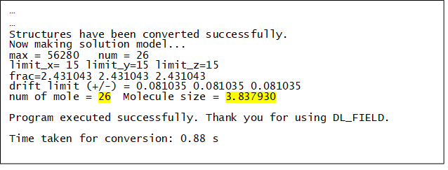
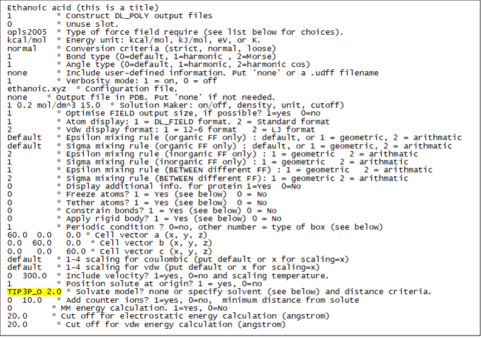
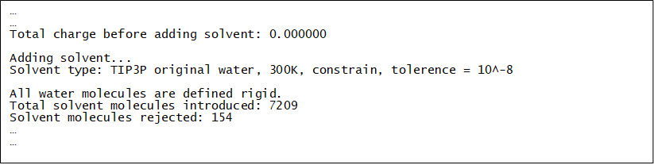

Sample Preparation¶
Step 1: Setting up the Force field (FF) model using DL_FIELD
Open and edit a DL_FIELD control file (or use dl_field.control1 in this example). The relevant changes are highlighted in yellow below.
- Start with a single molecule configuration (e.g. ethanoic.mol2 found in Structures).
- Use the Solution Maker feature in DL_FIELD to set up the solution model: A concentration of 0.2 M (mol/dm3) is specified in the Solution Maker section. DL_FIELD will calculate the closest integral number of ethanoic acid molecules needed to make up the concentration based on the given simulation box size, which in this example, is a cubic of size 60 angstrom.
Ethanoic acid
1 * Construct DL_POLY output files
0 * Unuse slot.
opls2005 * Type of force field require (see list below for choices).
kcal/mol * Energy unit: kcal/mol, kJ/mol, eV, or K.
normal * Conversion criteria (strict, normal, loose)
1 * Bond type (0=default, 1=harmonic , 2=Morse)
1 * Angle type (0=default, 1=harmonic, 2=harmonic cos)
none * Include user-defined information. Put 'none' or a .udff filename
1 * Verbosity mode: 1 = on, 0 = off
./ethanoic_acid.mol2 * Configuration file.
none * Output file in PDB. Put 'none' if not needed.
1 0.2 mol/dm^3 15.0 * Solution Maker: on/off, density, unit, cutoff)
1 * Optimise FIELD output size, if possible? 1=yes 0=no
1 * Atom display: 1 = DL_FIELD format. 2 = Standard format
2 * Vdw display format: 1 = 12-6 format 2 = LJ format
default * Epsilon mixing rule (organic FF only) : default, or 1 = geometric, 2 = arithmatic
default * Sigma mixing rule (organic FF only) : default, or 1 = geometric, 2 = arithmatic
2 * Epsilon mixing rule (inorganic FF only) : 1 = geometric 2 = arithmatic
1 * Sigma mixing rule (inorganic FF only) : 1 = geometric 2 = arithmatic
1 * Epsilon mixing rule (BETWEEN different FF) : 1 = geometric 2 = arithmatic
2 * Sigma mixing rule (BETWEEN different FF): 1 = geometric 2 = arithmatic
0 * Display additional info. for protein 1=Yes 0=No
0 * Freeze atoms? 1 = Yes (see below) 0 = No
0 * Tether atoms? 1 = Yes (see below) 0 = No
0 * Constrain bonds? 1 = Yes (see below) 0 = No
0 * Apply rigid body? 1 = Yes (see below) 0 = No
1 * Periodic condition ? 0=no, other number = type of box (see below)
60.0 0.0 0.0 * Cell vector a (x, y, z)
0.0 60.0 0.0 * Cell vector b (x, y, z)
0.0 0.0 60.0 * Cell vector c (x, y, z)
default * 1-4 scaling for coulombic (put default or x for scaling=x)
default * 1-4 scaling for vdw (put default or x for scaling=x)
0 300.0 * Include velocity? 1=yes, 0=no and scaling temperature.
1 * Position solute at origin? 1 = yes, 0=no
none 2.0 * Solvate model? none or specify solvent (see below) and distance criteria.
0 10.0 * Add counter ions? 1=yes, 0=no, minimum distance from solute
0 * MM energy calculation. 1=Yes, 0=No
20.0 * Cut off for electrostatic energy calculation (angstrom)
20.0 * Cut off for vdw energy calculation (angstrom)
The solute molecules are duplicated and randomly orientated in the box, each solute molecule is at least 15 angstrom apart (critical distance, or cut-off distance) from one another.
| TIP: | The smaller the critical distance, the easier it is for DL_FIELD to pack the molecules into the simulation box. Larger critical distances mean the solutes are more dispersed in the simulation box. A low concentration of 0.2 M as shown in this example means DL_FIELD will insert fewer ethanoic acid molecules in the system and therefore can tolerate a larger range of cut-off values. |
|---|
The choice of a suitable value for the cut-off distance depends on several factors: size and shape of solutes and desired concentration. Note that choosing a small distance for low-concentration systems will likely result in a less disperse solute with molecules residing at certain regions in the system.
| TIP: | If DL_FIELD reports a failure to pack the molecule, reduce the cut-off (critical) value and run DL_FIELD again. |
|---|
Note
By means of trial and error, it turns out that a cut off distance of 15 angstrom is large enough to give relatively dispersed molecules in the system. Notice the control file -it indicates all atom labels will be generated in the DL_FIELD format (DL_F Notation), which provides chemically-sensitive information.
Step 2: Running DL_FIELD
When running DL_FIELD using the above mentioned dl_field.control1 file, the following information will be displayed on the screen:
The value ‘26’ indicates the actual number of ethanoic acid molecules inserted in the given simulation box size, which is the number needed to produce a concentration of 0.2 mol/dm3 in the system. The molecule size of 3.837930 angstrom (3 times the radius of gyration) provides a rough indication of the size of the molecule.
Step 3: Optional - Validating the solute packing of ethanoic acid molecules
You can skip this step if how the molecules are packed is not important to you. For solution models, you generally want to ensure you get well dispersed solute molecules.
| TIP: | You can view the outcome of the model setup - dl_poly.CONFIG - using VMD. Remember to insert the total number of atoms in the dl_poly.CONFIG file. |
|---|
If you are not satisfied with the way how the molecules are arranged in the box, adjust the cut off value in the control file (e.g. dl_field.control1) and rerun DL_FIELD. Note that the molecule orientations and positions will always change after each run, and so you will NOT be able to get identical configurations.
Step 4: Solvating the systems
Edit the control file (e.g. dl_field.control1) and insert the solvent choice as follows (or use dl_field.control2 file. Remember to change the control filename in dl_f_path). The only change is highlighted in yellow:
Run DL_FIELD. In this case, once the solute molecules are duplicated in the box, DL_FIELD will populate the space with the solvent molecules, with the original TIP3P water model (TIP3P_O). Where water molecules that are closer to the solute than the cutoff distance of 2.0 angstrom will be removed.
The following additional information will be given in dl_field.output.
Note
You can use dl_field.control2 to generate the solution model in one step: randomly place the solute molecules, and then add the water solvent!